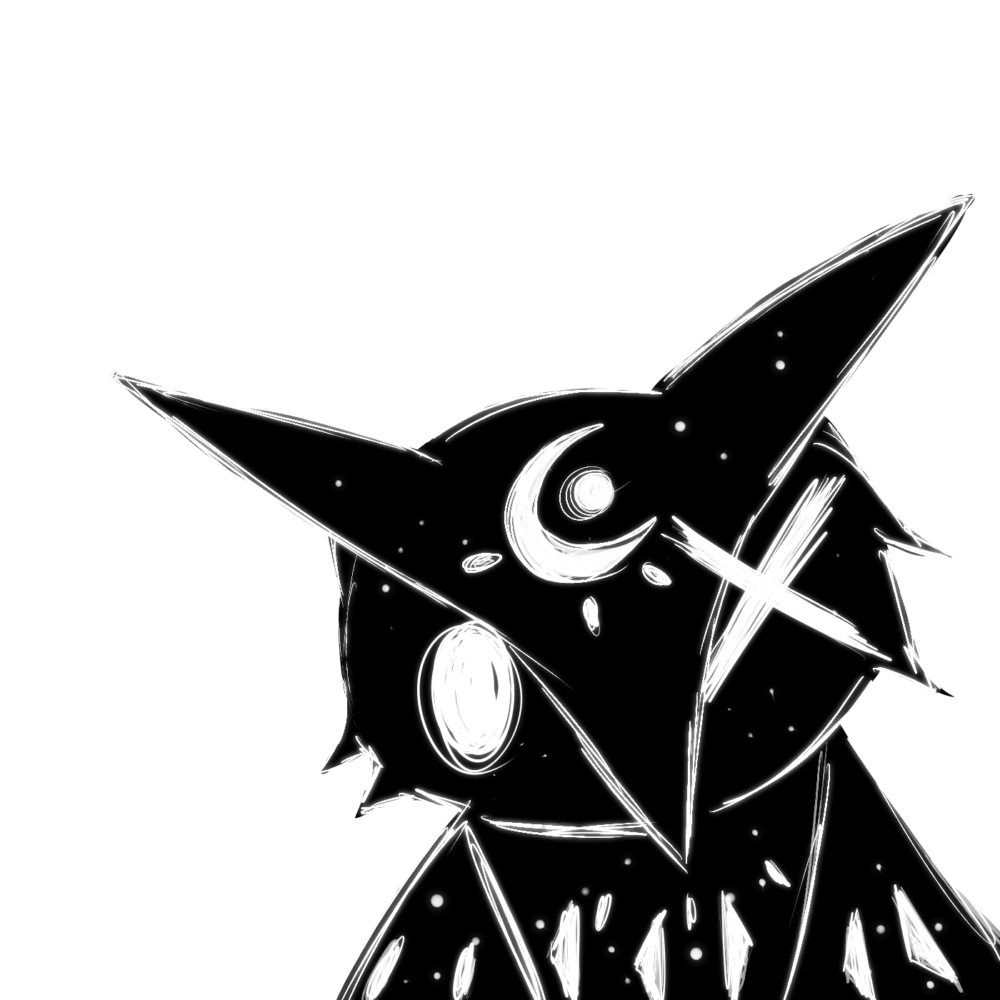
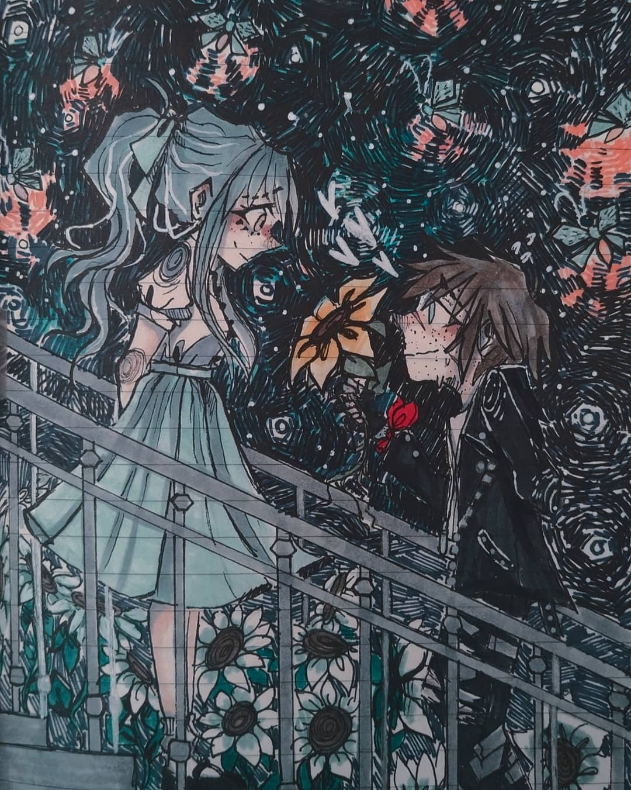

NIGHTOWL
Ilustradora
Este sitio tiene como propósito presentar un portafolio de mi trabajo como ilustradora, animadora, de diseño de personajes y un espacio para publicar mi cómic
Portafolio
esto es un ejemplo:
Arte Digital

Arte Tradicional

Proyectos
aquí es una sección para hablar sobre mis dos cómics en los que estoy trabajando
OUT/SIDERS

HYSTERIA

Acerca de...
Mi nombre es María y soy una estudiante de Artes Digitales de 20 años. Soy alguien muy curiosa que nunca se conformó a ver las cosas de la manera "normal", creo que por eso me gusta tanto ilustrar... pues encontré como plasmar todo lo que imagino y creo. Desde muy pequeña he estado enamorada de la fantasía, cuando tenía 12 años comencé a interesarme por tonos más oscuros de este género además de lo psicológico, desde esa edad comencé a enfocar mis ideas a la belleza de estos géneros, esa delgada línea entre lo extrañamente bonito y lo aterrador.
FAQ:Preguntas frecuentes
- ¿Qué software utilizas para dibujar?
- Utilizo principalmente Paint Tool Sai y Medibang Paint Pro
- ¿Utilizas tableta?
- sí utilizo, es una Huion Kamvas GT-156HDV2(Graphic Display)
- ¿Qué tableta me recomiendas para iniciar?
- La verdad cualquiera te puede funcionar, pero en lo particular recomendaría con la que yo inicié: la Wacom Intuos Pen, me parece muy cómoda y barata
- ¿Podrías pasarme la configuración de tus pinceles?
- ¡claro! estaré colocándolos por aquí para que puedan revisarlos y copiarlos en su programa (configuración para Paint Tool Sai).
- ¿Haces dibujos gratis?
- No. si gustas que dibuje algo para ti puedes comisionarme, pregunta sin compromiso
- ¿Dónde puedo leer Outsiders o Hysteria?
- por el momento ninguno de los dos está publicado, aunque es posible que Outsiders se publique primero (por WebToon y/o Tapastic)
- ¿Dibujas algo aparte de original?
- sí, es poco porque me siento mas cómoda dibujando cosas propias, sin embargo a veces decido hacer fan art de personajes/ ships/juegos/animes que me gusten mucho.
- ¿De dónde viene tu nickname?
- "NightOwl" es por su significado de "noctámbula", que es a la hora que normalmente dibujo, a veces agrego "Seer" al final, que es referencia a Seer de Identity V que tiene un skin llamado "Night Owl".
- "Six" es por la influencia que ha tenido en mi estilo Little Nightmares y que suelo dibujarme mucho con el impermeable amarillo .